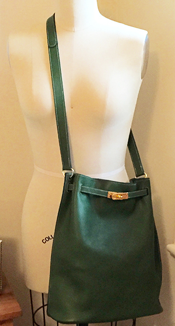

CNC Leatherwork
Home
Past Projects
Pattern Library
Tutorials
Resources
Contact
Equestrian Bag

Materials
3 18" x 24" pieces of 3 oz leather
1" brass buckle
gold turn-lock clasp and plates
2 1" brass D-rings
3M 465 Adhesive Transfer Tape
waxed thread
leather sewing needles
pattern